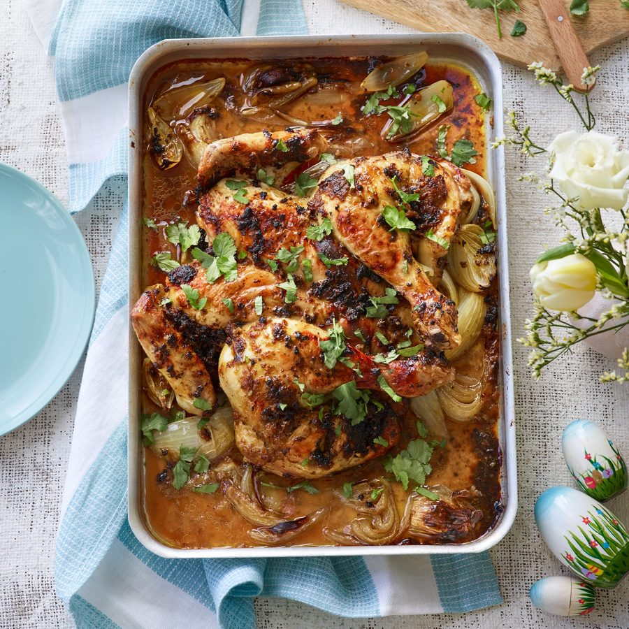

Apricot, coriander and chilli chicken

My family adores this chicken any time of year, but especially around Easter as it has the subtle promise of sunnier spring days with the addition of the apricots. They’re not at all overwhelming but add a lovely sweetness to balance out the spices – so much so that even my young children can’t get enough. If you can, make the butter and marinate the chicken a few hours before, or even overnight. You can also roast it up until it is just cooked through and finish the last 10 minutes on the barbecue, if it is an exceptionally warm day – which has happened! It’s a great barbecue dish. However you cook it, serve on the bed of onions, with lots of coriander to finish, and lots of buttery crushed new potatoes, roasted whole carrots and a peppery, lemon-dressed rocket salad.
Take your chicken out of the fridge 20 minutes before cooking it. Place the melted butter in a blender or mini food processor along with 2 tablespoons of the olive oil, the peeled garlic, cumin seeds, ground coriander, dried chilli flakes, dried apricots and the juice of the lemon half. Add all the coriander stalks and half the leaves. Season generously with sea salt and freshly ground black pepper and blitz to a paste. Slash the skin on the chicken thighs and rub the spiced apricot butter all over the chicken. Cut the onions into 2.5cm wedges and place in the bottom of a large roasting tray to create a trivet. Drizzle the onions with the remaining olive oil, then place the chicken on top.
When you are ready to cook your chicken, preheat your oven to 180C fan/gas mark 6. Pour the hot stock into the base of the tray and pop in the oven. Cook for 1 hour, then turn the oven up to 200C/gas mark 7 for a further 10 minutes, to get a lovely char on the skin, until just cooked through (pierce the meat in the thigh, and check that the juices run clear. There shouldn’t be any blood). Remove the tray from the oven, and you can leave it to rest as is. But I like to pop the tray directly on the hob for a few more minutes, just enough to reduce the stock a little more until slightly thickened. Spoon the juices and onions onto a large serving platter and top with the charred chicken. Finish by roughly chopping and scattering over the remaining coriander.